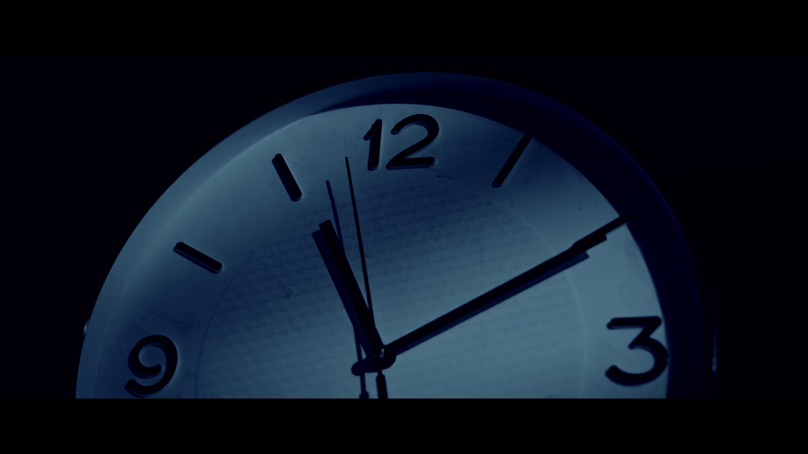
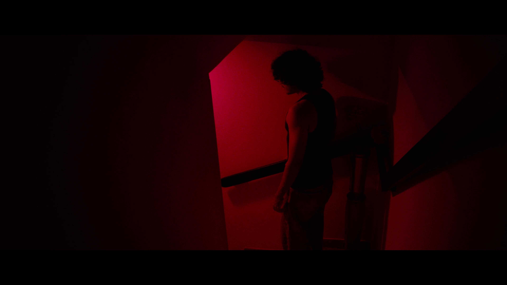
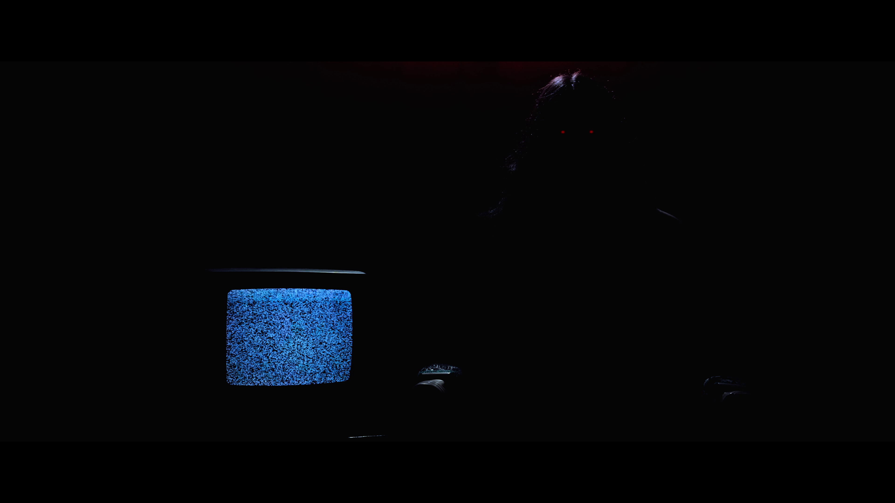

LAS PESADILLAS DUERMEN CONTIGO
Desde otra dimensión, una transmisión televisiva nos permite observar aquello que habita en el subconsciente humano.
01 // SINOPSIS
PANÓPTICO es un programa de televisión proveniente de otra dimensión, en el que su presentador, Vigilante, nos guía a través del mundo de las pesadillas de quienes en ese momento duermen. Es un sitio en el que se da rienda suelta a la creatividad en pro de sacar aquellas ideas desde lo más profundo del subconsciente humano.
03 // MOTIVACIÓN
PANÓPTICO nace de un sueño lúcido y de mi profunda fascinación por el terror como espejo de la condición humana. Mi motivación es transformar nuestros traumas, culpas y miedos reprimidos en monstruos y atmósferas opresivas.
Más que asustar, busco crear una experiencia audiovisual cruda y experimental que obligue al espectador a confrontar su propia oscuridad interna.
04 // FICHA TÉCNICA
05 // REALIZADORES
06 // DIRECCIÓN DE ARTE
Escenografía
Espacios oníricos y teatrales que intentan —con extrañeza— imitar el mundo humano, combinados con locaciones abandonadas y lúgubres.
Criaturas
Uso de maquillaje de efectos (heridas, desfiguraciones) para materializar los traumas de los personajes en monstruos perturbadores.
Vestuario
Contraste visual entre la elegancia descuidada de Vigilante y la agresividad gótica/emo de los antagonistas (cuero negro, corsets).
07 // FOTOGRAFÍA
Formato imperfecto
Uso de camcorders MiniDV para lograr una imagen áspera, sucia y con grano visible (estilo found footage).
Textura
Incorporación de ruido digital, fallos de señal y defectos de cinta.
Atmósfera
Iluminación inspirada en el expresionismo alemán, con contrastes agresivos (bleach bypass) y sombras marcadas que generan incomodidad visual.
08 // SONIDO
Diseño sonoro
Ambientes opresivos construidos con ruidos chirriantes y texturas metálicas/industriales que mantienen al espectador en alerta.
Musicalización
Pistas instrumentales e inmersivas que se fusionan con el ambiente para no distraer de la historia.
Identidad sonora
Contrastes marcados, desde coros teatrales y zumbidos catódicos en la introducción, hasta metal gótico sinfónico cantado en latín como textura de cierre.
09 // GALERÍA
REGISTROS VISUALES // FOTOGRAMAS // ARCHIVO PANÓPTICO




